Introducción
La Estepa Patagónica, es una de las regiones fitogeográficas continentales
más australes de Sudamérica. Abarca el centro-oeste de Mendoza, oeste de Neuquen
y Río Negro, prácticamente la totalidad de Chubut y Santa Cruz y noreste de
Tierra del Fuego.
Está representada principalmente por mesetas, valles, cañadones y llanuras,
que albergan una particular riqueza biológica. La estepa arbustiva, compuesta
mayormente por una vegetación achaparrada, es el resultado de las características
de su suelo, el clima templado-frío y seco y los fuertes vientos predominantes
del oeste.
La vegetación patagónica, adaptada a vivir en estas condiciones ambientales
adversas y rigurosas, es el refugio de guanacos, maras, zorros, zorrinos, pumas,
liebres, choiques, piches, martínetas y varias especies de roedores, que
encuentran en ella, un lugar propicio para su subsistencia.
Las principales actividades económicas en la estepa patagónica son la
ganadería ovina y la explotación petrolera. Ambas, promueven cambios en la
vegetación y en los suelos, a través del sobrepastoreo, la compactación y la
eroción, entre otros. Estas actividades, generadas por el hombre, conducen
a un fenómeno que año tras año agrava su situación en toda la Patagonia,
la desertificación.
En este trabajo, se muestran 18 especies de plantas, seleccionadas por
ser representativas de la zona norte de la Patagonia extra andina. La
mayoría de las especies descriptas son arbustos, aunque se incluyen también
algunas hierbas y pastos.
Ir a inicio
La vegetación de la Patagonia extra andina
La Patagonia es una región ubicada al sur del Río Colorado, y se extiende desde
la Cordillera de los Andes hasta el Océano Atlántico. El relieve incluye mesetas,
planicies y serranías de origen volcánico en su mayoría, que luego son reemplazadas
por formas glaciares a la altura de los ríos Coyle y Gallegos, en la provincia de
Santa Cruz. Las estepas y los semidesiertos patagónicos ocupan la mayor parte de las
vastas llanuras, mesetas y serranías del extremo sur del continente americano y
cubren un área cercana a los 800.000 km2.
El clima de la Patagonia está influenciado por las masas de aire provenientes
del Océano Pacífico y por los fuertes vientos provenientes del oeste. El movimiento
estacional de los centros de alta y baja presión sobre el Pacífico y las corrientes
oceánicas costeras con dirección ecuatorial, determinan los patrones estacionales de
la precipitación. En invierno, la alta intensidad de la zona de baja presión polar y
el desplazamiento hacia el norte del anticiclón del Pacífico, determinan un aumento
de las precipitaciones invernales sobre la región. La mayor parte de las precipitaciones
ocurre en los meses de invierno o primavera.
La Cordillera de los Andes influye directamente sobre el clima de la Patagonia, ya
que es una gran barrera para las masas de aire húmedo que provienen del Océano Pacífico.
Estas masas, que se mueven de oeste a este, descargan su humedad en las laderas
occidentales de la Cordillera de los Andes y, al descender en la vertiente oriental, se
calientan y se secan. Esto determina un fuerte gradiente de precipitaciones que decrece
exponencialmente de oeste a este. De esta forma, a lo largo de la Patagonia extraandina,
las precipitaciones varían entre los 600 y 120 mm anuales. En este sentido, en la mayor
parte del territorio, las precipitaciones no superan los 200 mm.
A partir de las distintas condiciones climáticas y edáficas podemos diferenciar en
la patagonia extraandina, dos grandes asociaciones vegetales denominadas Provincias
Fitogeográficas que presentan distintos tipos de vegetación:
Provincia Fitogeográfica del Monte
Se extiende sobre una gran región hacia el norte de Argentina llegando hasta el sur
de Salta inclusive. En la Patagonia abarca solo el norte llegando por el este hasta el
Río Chubut. Está dominada por una estepa arbustiva en donde son comunes distintas
especies de Jarillas y Algarrobos.
Provincia Fitogeográfica Patagónica
Se extiende desde el límite con la provincia fitogeográfica del monte, abarcando
el sudoeste de Mendoza, oeste de Neuquén y noreste de Río Negro y Chubut, hasta el
límite con la provincia fitogeográfica Sub Antártica.
A esta Provincia, se la divide en 6 distritos que presentan diferencias en el tipo
de comunidades vegetales y especies que las componen. Se caracteriza fisonómicamente
por presentar una estepa arbustivo-herbácea con distintas especies de coirones y
arbustos muchos de ellos son endémicos de la región.
Ir a inicio
Características de la vegetación de la estepa patagónica
Las plantas de la estepa patagónica, al igual que todas las plantas de las zonas
áridas, han desarrollado adaptaciones en las hojas, tallos y raíces que les permiten
sobrevivir en condiciones de baja humedad, alta evapotranspiración, fuertes vientos y
temperaturas extremas. Algunas de ellas se describen a continuación:
• Arbustos áfilos: La ausencia de hojas o la presencia de hojas pequeñas y con forma
de escamas es una característica común en las plantas de zonas áridas. De esta forma
disminuyen la superficie de transpiración. En su reemplazo los tallos adoptan la función
fotosintética y son verdes por la presencia de clorofila. El Solupe y la Barba de Chivo
son ejemplos de plantas con este tipo de adaptación.
• Presencia de resinas: Las hojas y flores están recubiertas con resina, reduciendo
la pérdida de agua por transpiración. El Botón de Oro y la Jarilla son ejemplos de plantas
con este tipo de adaptación.
• Hojas con cutícula engrosada: Muchas de las plantas presentan varias capas de células
superficiales en sus hojas, de esta forma los estomas (estructuras por donde las plantas
realizan el intercambio de gases y pierden agua por transpiración) quedan protegidos y
se disminuye la pérdida de agua. Un ejemplo de este tipo de adaptación lo presenta
el Quilembai.
• Hojas y tallos con almacenamiento de agua: Algunas plantas almacenan agua en los
tallos o en las hojas. Los cactus en general son un ejemplo de plantas que acumulan
agua en el tallo. El Jume reserva agua en sus hojas.
• Presencia de espinas: Las espinas son muy comunes en las plantas de zonas áridas
y actúan como protección ante los herbívoros. Pueden ser originadas a partir de hojas
que se modifican o en algunos casos, a partir de los tallos. Los cactus poseen este
tipo de adaptación y entre las plantas mencionadas en estas fichas, encontramos
el Alpataco, el Molle el Piquillín entre otras.
• Raíces: El sistema radicular de las plantas de zonas áridas puede adoptar distintas
formas. Por lo general, los arbustos presentan raíces muy largas para alcanzar grandes
profundidades en donde hay más humedad. En las hierbas y pastos, las raíces son
superficiales y les permiten captar agua rápidamente después de una lluvia.
• Colores: Los colores verde-grisáceos, verde-opacos y amarillentos que presentan
las hojas de las plantas de la Patagonia también representan una adaptación a las
condiciones extremas de luz y humedad. Este tipo de colores más bien claros, reducen
la pérdida de agua por transpiración, ya que reflejan más luz de la que absorben,
impidiendo que la planta sufra un estrés hídrico severo.
• Tamaño y forma: Debido a los intensos vientos que azotan la región, los arbustos
de la Patagonia son de bajo tamaño y su forma estructural es semicircular (achaparrados).
De esta forma, ofrecen una mínima resistencia al viento.
Ir a inicio
Problemas de conservación en la estepa patagónica: desertificación
La desertificación es un fenómeno complejo que involucra un conjunto de procesos
asociados al deterioro de ambientes áridos, semiáridos y sub húmedos. Tal deterioro
involucra la extinción local de especies, la erosión del suelo, la modificación de la
estructura de la vegetación y la disminución de la productividad biológica del ecosistema.
Todos estos procesos pueden ocurrir espontáneamente debido a la acción de agentes
naturales y/o a la dinámica interna del ecosistema. Sin embargo, sólo se hablará de
desertificación cuando los cambios tienen lugar por acción del hombre. El término
desertificación no debe confundirse con el término “aridez”, ya que éste último hace
referencia a una condición ambiental, determinada climáticamente.
Entre las principales actividades económicas en la Patagonia continental encontramos
la ganadería ovina, la explotación petrolera, el turismo y la minería. Estas actividades
promueven cambios en la vegetación y los suelos, por ejemplo, a través del pastoreo de
los animales confinados por un alambrado. Cuando la cantidad de animales sobre una
superficie determinada es muy alta se produce un consumo excesivo de plantas de una
misma especie, sobre todo las preferidas. Muchas veces esto conduce a la extinción
local de las mismas.
En este caso, el suelo queda descubierto y aumenta la probabilidad de erosión eólica
o hídrica. En la actividad petrolera, el tráfico de maquinarias en caminos y playas de
maniobras, asociadas a los pozos petroleros, promueve no sólo la desaparición de la
cubierta vegetal (total y no específica), sino que también genera cambios en el suelo,
tales como la compactación, la erosión y la contaminación.
El pastoreo en la Patagonia ha sido generalizado, a tal punto que, en la actualidad,
no se conocen áreas remanentes no pastoreadas. La explotación petrolera está más
concentrada en el espacio pero, al mismo tiempo, su impacto es de mayor intensidad.
La colonización de las estepas patagónicas con ganado ovino y vacuno ocurrió a
fines del siglo XIX. Desde el momento de la colonización, la cantidad de ovejas ha
mostrado dos fases: una creciente, hasta mediados del siglo XX, seguida por una fase
decreciente. La caída del número total de ovejas, sumado además a las recientes sequías,
ha sido interpretada como el resultado del progresivo deterioro de la productividad de
las estepas patagónicas, es decir, de la desertificación. Esta interpretación no parece
estar errada, debido a que se han detectado otros cambios; por ejemplo, la caída
generalizada de la cobertura vegetal total, el aumento de especies poco pastoreadas
(al tiempo que disminuían las preferidas por el ganado), el aumento de indicios de
erosión eólica e hídrica, tales como la formación de cárcavas o médanos, etc. En
conjunto, estos cambios sugieren que el sobrepastoreo ovino ha causado un progresivo
proceso de desertificación.
Los herbívoros nativos pueden seleccionar su dieta a distintas escalas espaciales,
desde el paisaje a las plantas individuales. La capacidad migratoria de los animales
silvestres permitiría reducir el efecto de los años secos o del frío a partir del
movimiento hacia otras regiones para evitar el estrés alimentario o climático. Los
herbívoros domésticos, por el contrario, están confinados por alambrados, lo que
determina que las ovejas seleccionen las mismas plantas una y otra vez, y que las
sometan al estrés de tener que reponer el tejido removido y de no poder asignar
recursos a la formación de reservas o a la producción de flores y frutos. Por otro lado,
los pastoreos confinados muchas veces mantienen las cargas animales constantes a lo
largo de todo el año y en diferentes años. En momentos de mayor sensibilidad, como
durante los períodos de sequía, las plantas son sometidas, en términos relativos, a
una mayor presión extractiva.
Probablemente la principal amenaza para los ecosistemas patagónicos es la falta de
conocimiento. En este sentido, esperamos colaborar para revertir la falta de información
y el desconocimiento de las especies y procesos que ocurren en estos ecosistemas.
Ir a inicio
Plantas de la Estepa Patagónica
Solupe
Ephedra ochreata
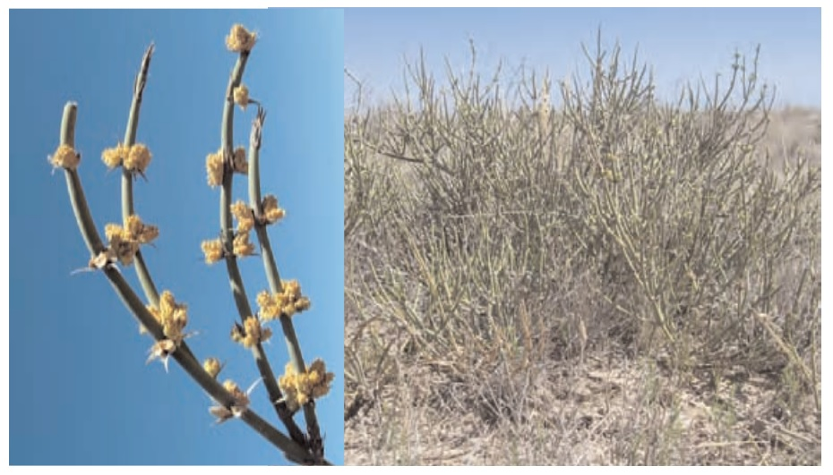
Características generales : Arbusto de 0,8 a 2 m de altura. Ramas gruesas y rígidas. Son buenas
forrajeras, buscadas por el ganado y bastante comunes en los médanos, donde crecen protegidas
por otros arbustos.
Hojas : Diminutas, reducidas a pequeñas escamas de 5 a 14 mm que no realizan fotosíntesis.
Flores : Son arbustos dioicos, es decir, hay plantas con flores femeninas y plantas con flores
masculinas. Son de color amarillo o verde y están dispuestas en pequeñas piñas agrupadas alrededor
de las ramas. Las flores femeninas están protegidas, sólo en la base, por pequeñas hojitas carnosas
de color rojo vivo. Se encuentra en flor a principios de octubre.
Fruto : Es una especie de piña pequeña de color rojo amarronado o castaño claro con 3 o 4 semillas
(excepcionalmente 2). Fructifica a finales de noviembre.
Distribución : Habita en el Monte Occidental y en la Estepa Patagónica, desde Catamarca hasta
Santa Cruz.
Propiedades : Medicinales: Para la medicina presenta un interés particular por
la presencia de efedrina entre sus compuestos. Comestibles: Los frutos son de sabor
agradable. Forrajeras: Constituye una buena oferta de forraje durante el crítico
período invernal, ya que sus ramitas verdes pueden ser ramoneadas durante todo el
año, atenuando entonces las deficiencias de forraje estacional
Jume, Vidriera
Suaeda divaricata
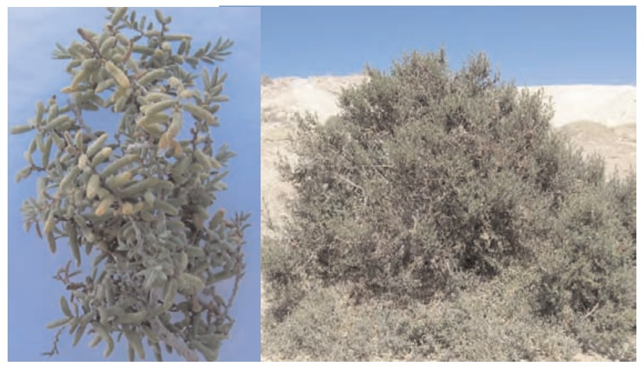
Características generales : Arbusto de 1 a 3 m de altura. Crece en suelos salinos
cerca del mar y sus tejidos tienen alto contenido de sales.
Hojas : De color verde botella, largas y carnosas que pueden almacenar pequeñas
reservas de agua.
Flores : Son arbustos dioicos, es decir hay plantas con flores femeninas y plantas
con flores masculinas. Las flores son pequeñas. Florece en primavera y verano.
Fruto : Tienen un fruto seco, rodeado por una estructura carnosa en forma de copa,
denominada cáliz.
Distribución : Habita en suelos salobres en las provincias patagónicas y centrales
desde Chubut hasta Santa Cruz.
Propiedades : Tintóreras: se usa para lavar y teñir lanas, lográndose tonalidades
grisáceas. También se utilizaba para la elaboración de jabón, por lo que también
es conocida como mata jabón.
Zampa
Atriplex lampa
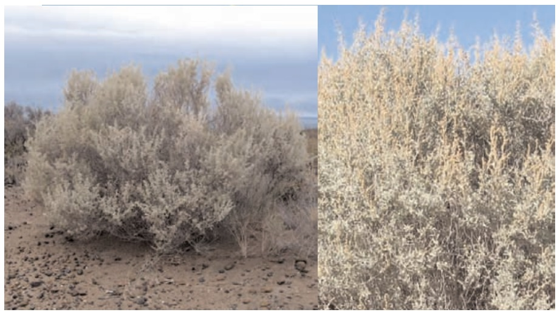
Características generales
Arbusto perenne, de 0,8 a 2 m de altura, de copa densa. Tallo estriado y quebradizo. Es una especie tole�rante a suelos con alto grado de salinidad; acumula sales, lo que le da un sabor especial a sus hojas.
Puede utilizarse para la rehabilitación de terrenos áridos degradados y en la producción de forraje y com�bustible en las zonas áridas.
Hojas
Pequeñas, angostas, de color verde ceniciento o gris, plegadas por el nervio central y arqueadas.
Flores
Son arbustos dioicos, es decir, hay plantas con flores femeninas y plantas con flores masculinas. Las flo�res son pequeñas y se agrupan en la punta de las ramas (ápice). Florece de octubre a noviembre.
Fruto
El fruto está conformado por la semilla encerrada entre dos hojas especializadas (brácteas) soldadas de
color verde brillante, y a menudo con tonalidades rojizas. Fructifica de noviembre a enero.
Distribución
Habita en el Monte Occidental, en la Estepa Patagónica desde Catamarca hasta Santa Cruz, y en las pro�vincias centrales de Argentina.
Propiedades
Medicinales: tiene propiedades astringentes y digestivas. Se lo utiliza en golpes, torceduras, quemaduras
y dolores. Tintóreas: se utiliza la ceniza de toda la planta con el fin de lavar y aclarar la lana. Forrajeras:
el ganado la prefiere como forrajera sólo en aquellos establecimientos que disponen de abundante agua
dulce (debido a la alta concentración de sales que presenta la planta)
Barba de Chivo
Prosopidastrum globosum
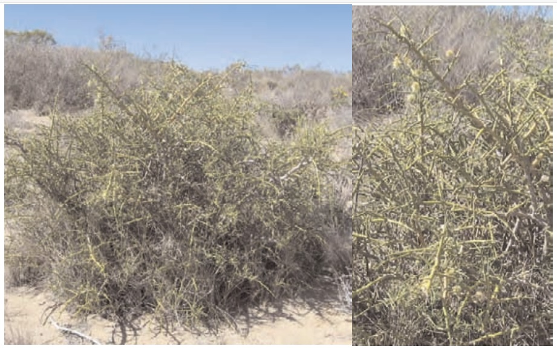
Características generales
Arbusto de 1 a 2 m de altura con tallos verdes, espinosos y casi sin hojas. Fotosintetiza a través de sus
ramas. Crece preferentemente en lugares secos, sobre suelos arenosos y pedregosos. Es un arbusto endé�mico de Argentina, originario de la región occidental.
Hojas
Pequeñas, que se caen fácilmente.
Flores
Agrupadas en un receptáculo en forma de copa (capítulo) blanco-amarillento. Florece desde mediados
de primavera hasta principios de otoño.
Fruto
Es una chaucha seca (legumbre), con numerosas semillas. Fructifica desde mediados de primavera hasta
principios de otoño.
Distribución
Se distribuye desde Catamarca hasta Chubut.
Propiedades
Forrajeras: es alimento de mamíferos silvestres como la mara.
Alpataco
Prosopis alpataco
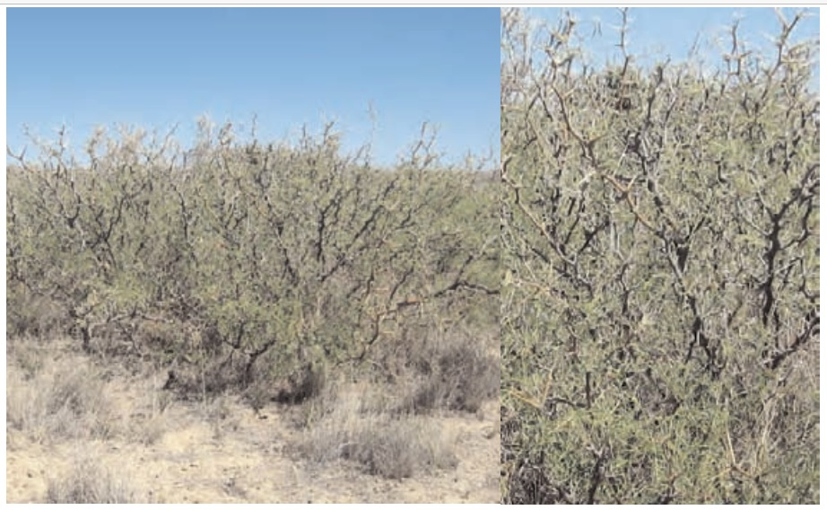
Características generales
Arbusto de 0,2 a 1,5 m de altura, posee ramas subterráneas de las cuales emergen las ramas aéreas, con
espinas de hasta 6 cm de longitud, dispuestas de a pares.
Hojas
Tiene hojas compuestas (hoja formada por varias hojas finitas llamadas folíolos) que llegan a medir unos
14 cm. Se caen antes de la llegada del invierno.
Flores
Se presentan en racimos. De coloración amarillenta. Florece en el mes de octubre.
Fruto
Es una chaucha seca (legumbre), de unos 15 cm de largo. De color amarillento y sabor amargo.
Distribución
Es una planta característica de la región del Monte. Se distribuye en las provincias del oeste argentino,
centrales y del norte patagónico.
Propiedades
Comestibles: los tehuelches comían las semillas o extraían una especie de harina dulce de las vainas.
Forrajeras: es un recurso natural muy importante para todo tipo de ganado que come tanto el follaje tier�no como los frutos. También es el alimento preferido de algunos herbívoros nativos como el choique, la
copetona y el guanaco
Piquillin
Condalia microphylla
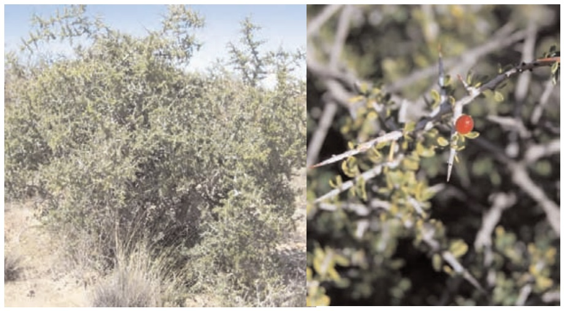
Características generales
Arbusto de 0,5 a 2 m de altura, de ramas espinosas. Es una especie abundante y se distingue fácilmente
de otros arbustos por su color verde oscuro, en contraste con las demás especies que en general osten�tan una coloración más clara.
Hojas
Reducidas y con forma de elipse, dispuestas muy próximas entre si en las ramas.
Flores
Amarillo verdosas, carecen de pétalos. Florece en primavera.
Fruto
Con forma ovalada y de color amarillo, rojos o negros según su grado de madurez; contienen 1 ó 2 semi�llas muy grandes en proporción al fruto.
Distribución
Endémica de Argentina, se extiende desde el sur de la provincia de Salta hasta la Península Valdés
(Chubut). En Patagonia se distribuye en el norte y este de Río Negro y en el extremo noreste de Chubut.
Propiedades
Comestibles: Posee un fruto dulce muy sabroso. Tintóreas: de la corteza de la raíz se extrae un tinte
marrón rojizo que se utiliza para teñir lana. Es el colorante más usado en la elaboración de artesanías de
telar. Forrajeras: las ramas jóvenes, tiernas, constituyen un componente importante de la dieta de los ovi�nos y caprinos. Es un arbusto que se utiliza como leña, por lo que ha disminuido en casi toda la
Patagonia
Molle
Schinus johnstonii
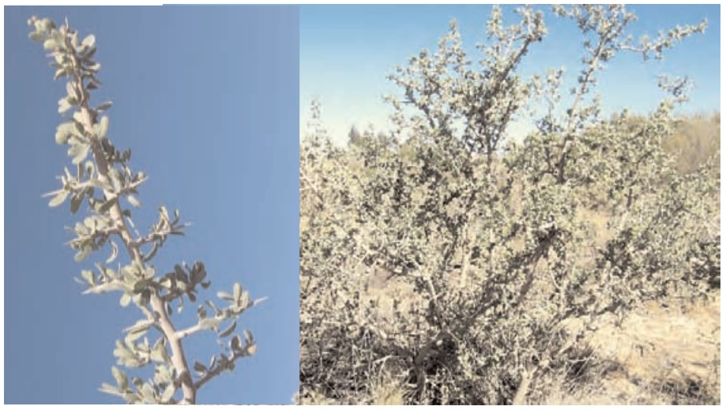
Características generales
Arbusto de 1,5 m de altura; de ramas grisáceas que terminan en espinas. Liberan una fragancia por la
resina y aceites esenciales que poseen. Son parasitadas por ciertas avispas y como defensa forman estruc�turas globosas.
Hojas
Pequeñas y rígidas. Tienen forma de lanza sin punta, con sus bordes enteros o con algunos dientes.
Flores
Dispuestas en una especie de racimo, corto y con muchas flores de color amarillo.
Fruto
Es redondo, de color violeta oscuro a negro azulado. Parece ser jugoso al madurar, pero es seco y se
quiebra para liberar las semillas.
Distribución
Endémica de Argentina, originaria de Río Negro. Se extiende hacia el norte, hasta San Juan, Mendoza y
sur de Buenos Aires; y hacia el sur hasta Chubut.
Propiedades
Comestibles: los tehuelches gustaban de sus frutos, también elaboraban chicha de sus semillas machaca�das. Refugio y recreo: los campamentos tehuelches eran, con mucha frecuencia, instalados en los molla�les. Las espinas, largas y firmes se utilizaban para el estaqueado de los cueros destinados a curtido. Sus
raíces proporcionan leña de muy buena calidad, por lo que ha disminuido en casi toda la Patagonia, a
partir de su uso como combustible. Tintóreas: se utiliza la corteza de la raíz para obtener una coloración
marrón rosado, con las hojas se obtiene un color verde seco.
Jarilla
Larrea divaricata
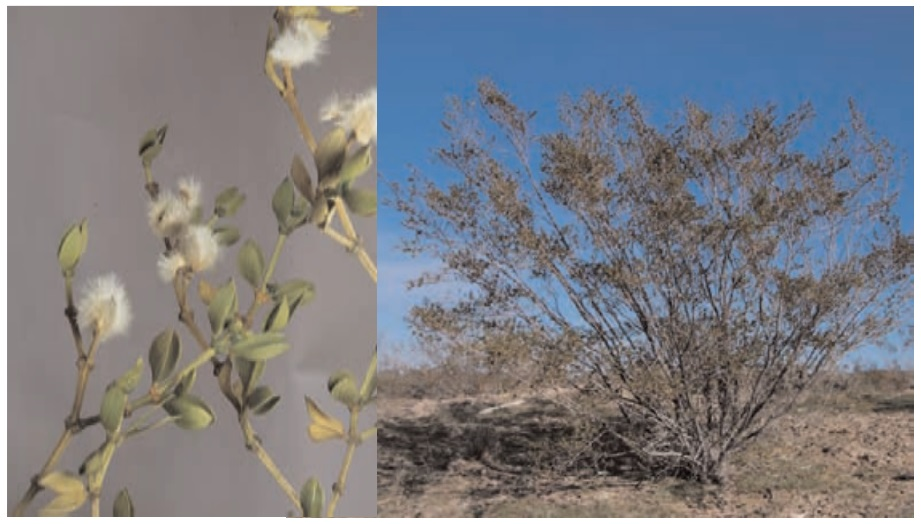
Características generales
Arbusto de hasta 3 m de alto con tallos leñosos y siempre verdes. Sus ramas jóvenes están cubiertas de
pelos finos y suaves. Sin espinas. Sus raíces se extienden en la profundidad y hacia los laterales, para
captar agua de los distintos estratos. Esto le permite absorberla durante las cuatro estaciones y crecer todo
el año. Cumple un rol muy importante como protectora del ambiente contra la erosión.
Hojas
Pequeñas y resinosas.
Flores
Amarillas, solitarias, con un pequeño tallo y presencia de pelos. Florece a principios de octubre.
Fruto
El fruto esta cubierto de pelos muy cortos, es de color blanco grisáceo, tipo cápsula, con semillas lisas
que tienen forma de riñón. Fructifica en enero.
Distribución
Dominante en la provincia fitogeográfica del Monte. Se halla desde Mendoza y el límite sur de Buenos
Aires, hasta Chubut.
Propiedades
Tintóreas: se la utiliza para teñir lanas obteniéndose una coloración amarillo - anaranjado
Neneo
Mulinum spinosum
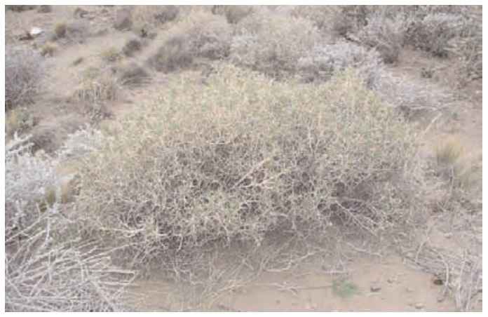
Características generales
Arbusto de 0,3 a 1,5 m de altura por 0,3 a 3 m de diámetro, muy espinoso, forma matorrales redondos,
enmarañados y de color verde claro.
Hojas
Son triangulares, espinosas, de color amarillo pajizo y olor penetrante. Las hojas que se desarrollan en
primavera son tiernas, en verano se vuelven duras y punzantes, luego se secan y entran en reposo en
otoño.
Flores
Las flores son amarillo verdosas. Florece en el mes de noviembre.
Fruto
Con forma ovoide y alada. Bien adaptado a la dispersión por el viento.
Distribución
Es uno de los principales componentes de la estepa herbáceo arbustiva y de las laderas bajas de las mon�tañas, desde San Juan hasta Santa Cruz, apareciendo en altitudes de 40 a 1500 m.
Propiedades
Debido a su contenido en resinas y aceites, las ramas y las raíces arden fácilmente por lo cual era común
su uso en fogatas para hacer señales de humo. Forrajeras: el ganado ovino consume sus flores.
Tomillo
Acantholippia seriphioides
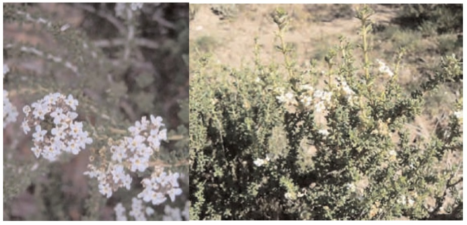
Características generales
Arbusto bajo, de 0,30 a 0,60 m. Con ramas rígidas, cubiertas de pelos. Muy aromático.
Hojas
Muy pequeñas de color verde oscuro a morado en el otoño.
Flores
Pequeñas, dispuestas en ramilletes de color blanco-cremoso.
Fruto
Es seco y pequeño, hasta 2 mm, contiene 2 semillas.
Distribución
Es una especie endémica de Argentina. Habita suelos rocosos de las regiones áridas, en las provincias de
San Juan, Mendoza, San Luis, y en Patagonia desde Neuquén a Santa Cruz.
Propiedades
Comestible: se utiliza como condimento para varios platos. Medicinal: los tehuelches preparaban una
infusión para combatir resfríos o como remedio para afecciones gastrointestinales.
Yao Yin
Lycium chilense
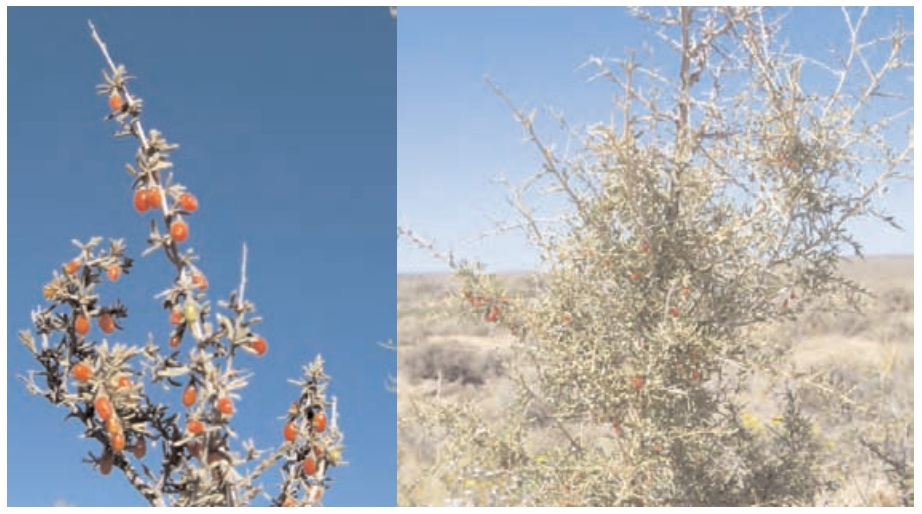
Características generales
Arbusto enmarañado y ramoso de 1 a 2 m de altura. De tallo amarillo, grisáceo-ceniciento, ramificado,
sin espinas (inerme), densamente pubescente. Las ramas son delgadas, generalmente algo colgantes. Es
común observar esta planta creciendo dentro de otros arbustos más rígidos que le brindan protección y
sostén.
Hojas
Las hojas se disponen de forma alternada sobre las ramas. Son planas, algo carnosas, sésiles y de color
verde brillante.
Flores
Las flores, de color blanco-amarillento, se encuentran solitarias en la base (axilas) de las hojas.
Florecen en distintos momentos a lo largo del año.
Fruto
Pequeño, oval y rojizo, con muchas semillas. Cuando madura tiene forma de minúsculos tomates peritas.
Distribución
Se distribuye en toda la provincia fitogeográfica del Monte. Se lo encuentra en Mendoza, sur de Buenos
Aires y en la Patagonia, desde Río Negro a Santa Cruz. Presenta variedades, una de ellas con distribu�ción exclusiva en la Patagonia.
Propiedades
Tintóreas: sus frutos rojos se usan para teñir lanas en tonalidades grisáceas. Forrajeras: es un arbusto pre�ferido por el ganado y de buena calidad nutritiva, especialmente las ramas jóvenes. Asimismo los frutos
son muy apetecidos por los choiques.
Lycium chilense
Uña de Gato
Chuquiraga erinacea subespecie hystrix
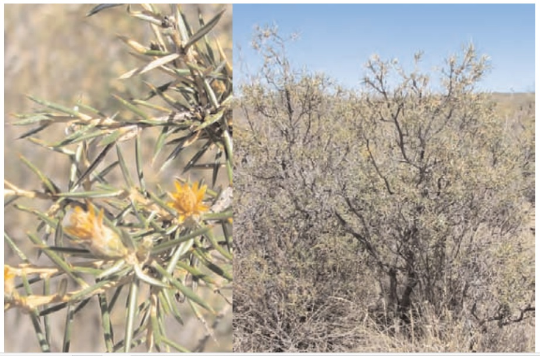
Características generales
Arbusto de hasta 1,5 m de altura. Erguido con ramas erectas.
Hojas
Alternas a lo largo del tallo, lineales con forma de aguja y espinosas en la punta de las ramas.
Flores
De color amarillo, en una agrupación de 8 a 10 flores sobre un receptáculo, en forma de copa (capítulo)
rodeada por una corona de hojitas duras y doradas. Se observa en floración desde el mes de diciembre.
Fruto
Es un fruto seco y largo con abundantes pelos.
Distribución
Especie endémica de Argentina. Se distribuye desde el sur oeste de Catamarca hasta el norte de Chubut,
a lo largo de la pre-cordillera y el norte de la Patagonia.
Propiedades
Forrajeras: Los guanacos, choiques y el ganado ovino solo comen, ocasionalmente, las flores.
Quilembai
Chuquiraga avellanedae
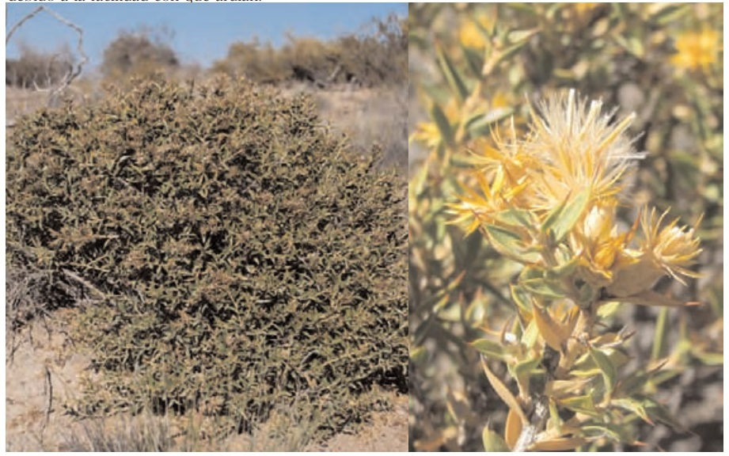
Características generales
Arbusto perenne de forma redondeada, de hasta 1 m de altura. Su forma redondeada genera un micro�ambiente para que otras especies puedan crecer dentro de ella.
Hojas
De color verde brillante, rígidas, coriáceas y terminadas en una espina marrón rojizo. Con nervio promi�nente en la cara inferior de las hojas.
Flores
Presentan una inflorescencia de color amarillo casi dorado de aspecto coriáceo. Las flores se disponen
sobre una especie de disco en la punta de las ramas. Se observa en floración desde el mes de diciembre.
Fruto
Es un fruto seco y largo con abundantes pelos.
Distribución
Endémica de Argentina. Se distribuye desde el sur de Mendoza hasta Santa Cruz.
Propiedades
Medicinales: los tehuelches la utilizaban para aliviar el dolor de cabeza. Forrajeras: sus flores y frutos son
intensamente comidos por la hacienda especialmente en el verano, en ausencia de mejores forrajes. No
ocurre lo mismo con sus hojas y tallos tiernos, estos son rechazados por su sabor amargo y la presencia
de espinas. Los indígenas utilizaban sus ramas y hojas para encender el fuego y hacer señales de humo
debido a la facilidad con que ardían.
Chuquiraga avellanedae
Botón de Oro
Grindelia chiloensis
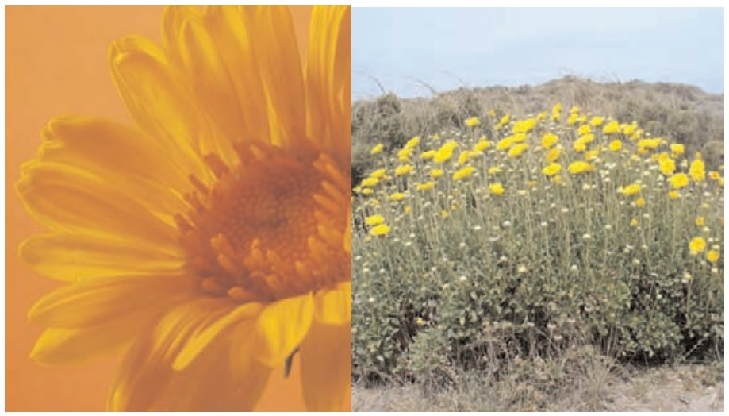
Características generales
Mata ramificada de 30 a 80 cm de alto, con gran cantidad de hojas en los tallos, más concentradas en la
base de los mismos que en la parte superior. Produce una resina lechosa y pegajosa en la superficie de
sus hojas y frutos. Se multiplica por gajos y división de matas. Esta especie coloniza rápidamente los sue�los removidos y erosionados.
Hojas
Largas, enteras, aserradas en el margen y pegajosas.
Flores
Las flores están dispuestas en una inflorescencia grande de más de 5 cm de diámetro, de color amarillo
fuerte. Es común encontrar sólo los centros sin pétalos con una sustancia blanca y pegajosa. Florece
durante casi todo el año, siendo más abundante desde principios del mes de octubre.
Fruto
El fruto es seco y pequeño, cerrado, con una única semilla.
Distribución
Endémica de Argentina. Se distribuye en toda la Patagonia, desde el sur de Mendoza hasta el norte de
Santa Cruz.
Propiedades
Medicinales: refrescante y antifebril, para torceduras y quemaduras.
Charcao o Mata Mora
Senecio filaginoides
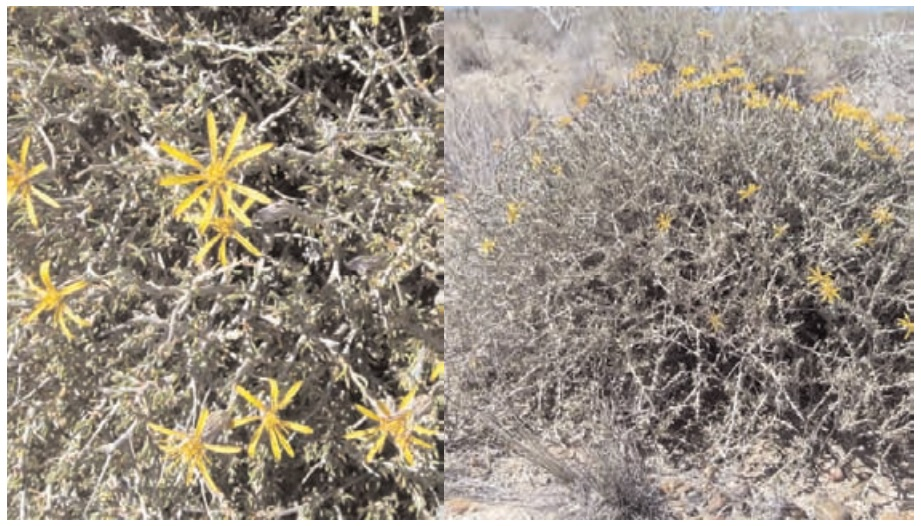
Características generales
Es un arbusto esférico y ramoso de color gris ceniza cuya altura oscila entre 0,40 m y 1 m. Crece prefe�rentemente en suelos arenosos o pedregosos. Suele observarse en banquinas y terrenos removidos como
canteras. Es muy resistente a la falta de agua.
Hojas
Alternas a lo largo de las ramas, lineales, enteras, algo dobladas hacia atrás en los márgenes, de color
gris ceniza y cubiertas de pelos que le dan una textura aterciopelada.
Flores
Pequeñas y amarillas reunidas en receptáculos con forma de copa (capítulos), que se reúnen a su vez en
ramilletes. Las semillas están cubiertas por un grupo de pelos blancos, llamados papus. Se encuentra en
floración desde principios de octubre.
Fruto
Presenta un fruto seco que no se abre al madurar llamado cipsela y que aparece entre febrero y marzo.
Distribución
Especie muy frecuente en las regiones áridas de Argentina desde Tucumán hasta Santa Cruz.
Propiedades
Medicinales: haciendo hervir sus ramas se prepara una decocción para beber en caso de catarro y usar
externamente para el dolor de huesos, aplicándola en forma de compresas. Otros: suele utilizársela para
ahumar carne de potro.
Senecio filaginoides
Coirón Llama
Jarava humilis
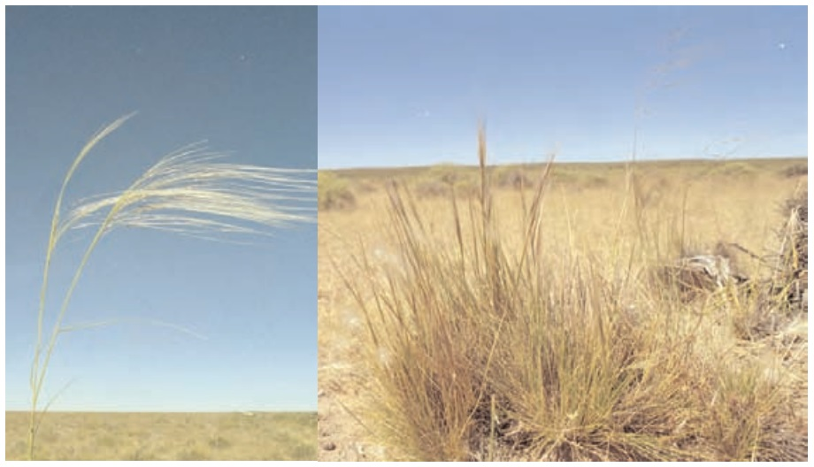
Características generales
Hierba característica de la Estepa Patagónica. Es un pasto perenne característico de la estepa patagónica
que forma matas con forma de “llama”. Tiene una altura entre 20 y 40 cm.
Hojas
Rígidas, algo punzantes y de color blanco amarillentas.
Flores
Pequeñas y simples, reunidas en una inflorescencia.
Fruto
Pequeños y plumosos (cariopse). Poseen una larga y delgada extensión llamada arista que se dobla en
ángulo recto y les permite desplazarse con el viento, clavarse en el suelo y colonizar nuevos ambientes.
Distribución
Se encuentra en el sur de Mendoza, en la Patagonia extra - andina, Neuquén, Río Negro, Chubut y Santa
Cruz.
Propiedades
Forrajeras: No es consumida por el ganado ovino. La consume el ganado vacuno y yeguarizo
Ciorón Poa
Poa ligularis
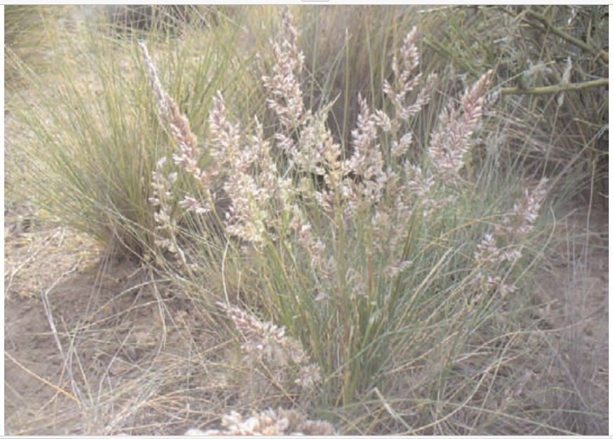
Características generales
Pasto perenne más denso en la base. Muy resistente a la sequía.
Hojas
Las vainas son cerradas, ásperas al tacto, de color blanquesina y las láminas más o menos rígidas.
Flores
Es una inflorescencia de 6 a 18 cm de largo, de color verde o violáceo.
Fruto
Es un fruto seco, pequeño y plumoso.
Distribución
Habita el centro y sur de Argentina, desde Santa Fe hasta la Patagonia (desde la Cordillera de los Andes
hasta el océano Atlántico).
Propiedades
Forrajeras: Muy valiosa para el ganado que la come al ras
Olivillo
Hyalis argentea
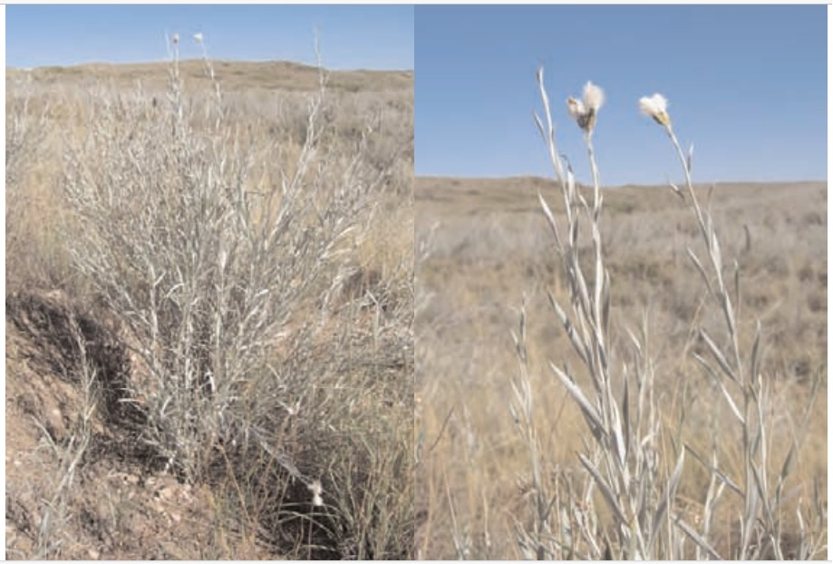
Características generales
Hierba perenne, robusta, típica de la zona de médanos. Los tallos presentan una altura de entre 0,50 a 1
m. Es de color verde claro ceniciento. Posee un extendido sistema subterráneo de raíces que le permite
colonizar eficazmente suelos arenosos.
Hojas
Simples, angostas y de textura aterciopelada.
Flores
De color lila, agrupadas en un receptáculo con forma de copa ubicado en el extremo de los tallos.
Fruto
Pequeños y plumosos, livianos que facilitan su dispersión por el viento.
Distribución
Especie endémica de Argentina. Originaria de regiones áridas, se distribuye a lo largo de la costa, sobre
médanos.
Propiedades
Forrajeras: La consume el ganado caprino y la fauna silvestre.
-----------------------------------------------------------------------